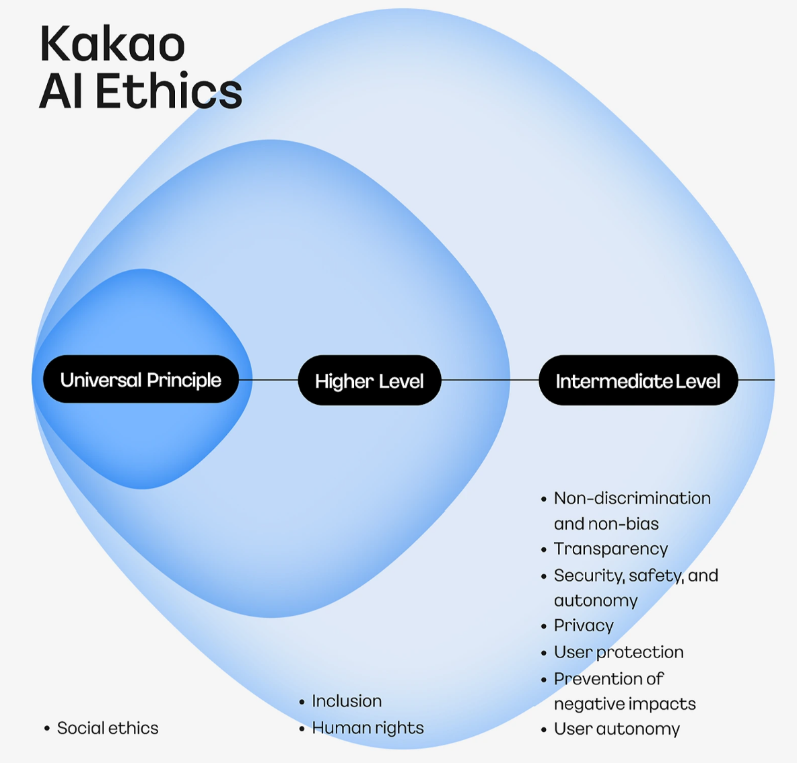

KANANA'S AI SAFETY

AI services can be helpful only when users can trust them with their information.
Kakao seeks to protect users through Kanana's on-device AI system and a set of ethical principles for the responsible development and use of AI.
AI PRIVACY
Privacy Through On-Device AI
Kanana processes and understands conversation content directly on the user's device instead of sending original conversations to an external server.
It is designed to protect sensitive information while providing relevant reminders and suggestions.
KAKAO AI SAFETY INITIATIVE
Principles for developing and using AI responsibly, protecting people and reducing potential harm
1. Social Ethics
Kakao aims to develop and use AI within the ethical standards of society.
Through its AI technology, the company seeks to contribute to human well-being, convenience, and happiness.
2. Inclusion
Kakao recognizes that providing inclusive AI technology is an important responsibility for a digital company.
It aims to create an environment in which all users can access AI technology equally, regardless of factors such as age or disability.
3. Human Rights
Kakao aims to respect human rights throughout the development and use of its AI technology.
The company seeks to prevent and respond to situations in which AI may negatively affect the rights of users or other stakeholders.
4. Non-Discrimination and Fairness
Kakao seeks to prevent its AI systems from causing discrimination or making biased decisions based on characteristics such as gender, race, national origin, or religion.
5. Transparency
Kakao aims to continuously inform users about how AI technology is used in its services, why it is being used, and what risks may be involved.
The company seeks to explain this information clearly while protecting information related to its business competitiveness.
6. Security, Safety, and Independence
Kakao builds security systems that follow legal requirements and protect AI systems and data from risks such as external attacks and malicious use.
The company also creates safety measures and response systems for unexpected situations or abnormal AI behavior. These measures are intended to provide stable services and prevent AI systems from being improperly changed or influenced by internal or external factors.
7. Privacy
Kakao seeks to protect users' privacy throughout the development and use of AI.
It follows relevant laws, establishes procedures for protecting personal information, and takes preventive and responsive measures to reduce the risk of personal information being misused.
8. User Protection
Kakao aims to apply user protection policies required by relevant laws and social standards.
It establishes safety procedures to prevent harm to users' rights and regularly checks whether these procedures are working properly.
9. Awareness of Potential Harm
Kakao recognizes that AI technology is not perfect and may create unexpected social consequences that differ from its original purpose.
When necessary, the company seeks solutions in cooperation with experts from relevant fields.
10. User Autonomy
Kakao aims to prevent situations in which people become overly dependent on AI.
The company seeks to ensure that interactions with AI do not weaken users' independence or threaten their physical, mental, or social well-being.